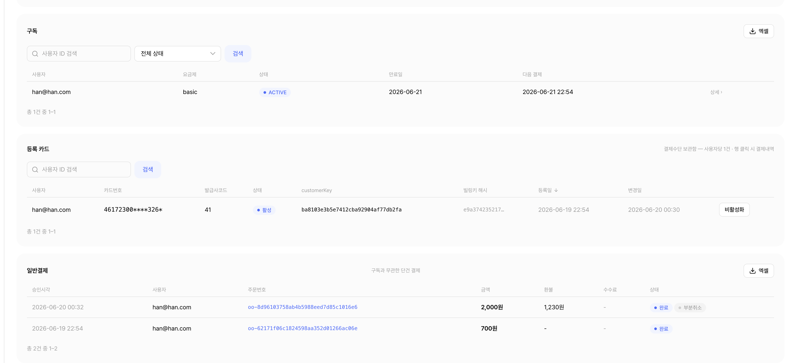
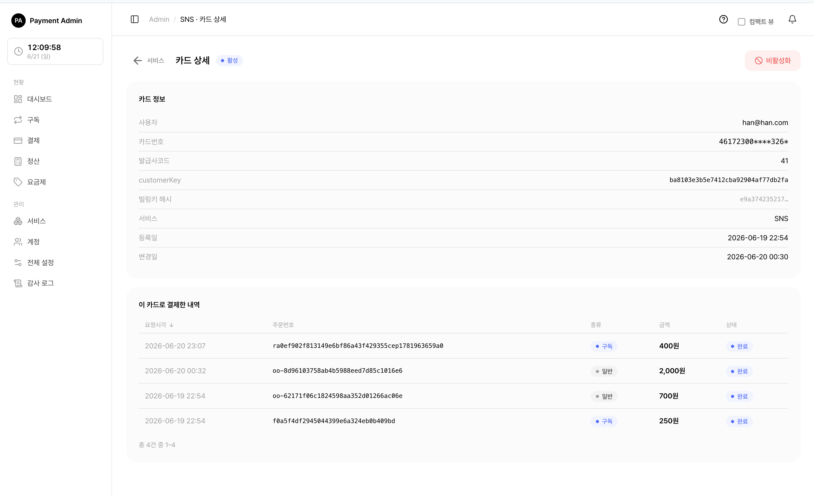

2. 카드(결제수단) 관리
이 문서는 관리자 콘솔에서 고객의 결제 카드를 어디서 보고, 어떻게 활성/비활성으로 관리하는지 안내합니다.
🍎
2.1 카드 보관함이란
고객(외부 서비스의 사용자)이 결제 카드를 등록하면, 그 카드 정보가 서비스별로 안전하게 보관됩니다. 이렇게 보관된 카드는 구독 자동연장이나 일반 결제에 다시 사용됩니다.
- 한 명의 고객은 한 서비스 안에서 카드 1장을 가집니다. 카드를 다시 등록하면 기존 카드가 새 카드로 교체됩니다.
- 보관함에는 카드번호 일부가 가려진 마스킹 번호(예:
123456******1234)와 발급사 코드만 보입니다. 실제 결제에 쓰이는 민감한 키 값은 화면에 절대 표시되지 않습니다.
💡참고: 카드 등록·교체·삭제는 보통 외부 서비스(고객이 쓰는 앱·웹)에서 일어납니다. 관리자 콘솔에서는 등록된 카드를 확인하고, 활성/비활성을 토글하는 일을 합니다.
2.2 서비스 상세의 '등록 카드' 목록

서비스마다 그 서비스에 등록된 카드들을 한 곳에서 볼 수 있습니다.
- 왼쪽 메뉴에서 서비스를 누릅니다.
- 카드를 보려는 서비스를 클릭해 서비스 상세로 들어갑니다.
- 아래로 내려가 등록 카드 섹션을 찾습니다. 사용자별로 한 줄씩, 보관된 카드가 표로 나옵니다.
등록 카드 표에는 다음 정보가 보입니다.
| 열 | 내용 |
|---|---|
| 사용자 | 외부 서비스의 사용자 ID |
| 카드번호 | 마스킹된 카드번호 |
| 발급사코드 | 카드 발급사 코드 |
| 상태 | 활성 또는 비활성 배지 |
| customerKey | 토스 결제 연동용 식별값 |
| 빌링키 해시 | 카드 식별용 해시값의 앞부분(전체 키는 표시하지 않음) |
| 등록일 / 변경일 | 카드가 처음 등록된·마지막으로 바뀐 시각 |
| (버튼) | 활성/비활성 토글 버튼 |
- 사용자 ID로 검색할 수 있고, 사용자·등록일·변경일 기준으로 정렬할 수 있습니다.
- 줄을 클릭하면 그 카드의 상세 화면으로 이동합니다.
💡팁: 토글 버튼은 줄 클릭(상세 이동)과 분리되어 있습니다. 버튼만 정확히 누르면 상세로 넘어가지 않고 상태만 바뀝니다.
2.3 카드 상세 — 이 카드로 결제한 내역

등록 카드 목록에서 한 줄을 클릭하면 카드 상세 화면이 열립니다.
화면 위쪽에는 카드의 현재 상태 배지(활성/비활성)와 활성/비활성 토글 버튼이 있습니다. 그 아래로 두 개의 카드 영역이 보입니다.
- 카드 정보: 사용자 ID, 마스킹된 카드번호, 발급사코드, customerKey, 빌링키 해시(앞부분), 소속 서비스, 등록일·변경일.
- 이 카드로 결제한 내역: 이 카드로 처리된 모든 결제가 최신순으로 나옵니다. 구독 정기결제와 일반(단건) 결제가 함께 표시됩니다.
결제 내역 표의 각 줄에는 요청 시각, 주문번호, 종류(구독/일반), 금액, 상태가 보이며, 줄을 클릭하면 그 결제의 상세 화면으로 이동합니다.
💡참고: 결제 내역은 "같은 서비스 + 같은 사용자"를 기준으로 모읍니다. 그래서 이 카드로 낸 구독 결제와 일반 결제가 한 화면에 모두 모여 보입니다.
2.4 카드 활성 / 비활성 토글 (결제 차단)
카드는 활성과 비활성 두 상태를 오갈 수 있습니다. 이 토글은 전체 관리자/서비스 담당자가 결제를 켜고 끄는 스위치입니다.
- 활성 이 카드로 결제할 수 있는 정상 상태.
- 비활성 이 카드로의 모든 결제가 차단되는 상태.
⚠️중요: 카드를 비활성으로 바꾸면 이 카드로 일어나는 모든 결제가 막힙니다. 구독 자동연장, 자동결제 재시도, 관리자의 수동 재결제, 일반(단건) 결제까지 전부 차단됩니다.
토글하는 방법
서비스 상세의 등록 카드 목록, 또는 카드 상세 화면 어디서든 토글할 수 있습니다.
- 등록 카드 목록의 줄 끝 버튼, 또는 카드 상세 화면 위쪽의 버튼을 찾습니다. 카드가 활성이면 비활성화, 비활성이면 활성화 버튼이 보입니다.
- 버튼을 누릅니다. 비활성화처럼 영향이 큰 동작은 "이 카드로의 모든 결제가 차단됩니다"라는 확인창이 한 번 더 뜹니다.
- 확인하면 상태 배지가 바뀝니다. 비활성화하면 비활성, 다시 누르면 활성으로 돌아옵니다.
비활성 카드를 결제하려고 하면
비활성 상태에서 결제가 시도되면 상황에 따라 다음과 같이 처리됩니다.
| 결제 종류 | 비활성 카드일 때 |
|---|---|
| 구독 자동연장·재시도 | 결제가 실패 처리됩니다(미수 → 정지로 이어질 수 있음). |
| 새 구독 만들기 | 막힙니다(구독 생성 불가). |
| 관리자 수동 재결제 | 막힙니다. 카드 상세에서 먼저 활성화해야 합니다. |
| 일반(단건) 결제 | 막힙니다. |
⚠️주의: 이미 이용 중인 구독이 있는 카드를 비활성화해도, 구독 상태가 즉시 바뀌지는 않습니다. 대신 다음 자동결제 시도에서 실패하면서 미수(PAST_DUE) → 정지(SUSPENDED) 순으로 진행됩니다. 구독 상태 흐름은 구독 관리를 참고하세요.
팁: 구독 상세 화면에서 카드가 비활성이거나 등록된 카드가 없으면, "재결제(결제 처리)" 버튼이 눌리지 않도록 자동으로 비활성화됩니다. 재결제가 필요하면 카드를 먼저 활성화하세요.
🔗함께 보기: 비활성 카드 때문에 멈춘 구독을 다시 살리는 방법(수동 재결제·만료일 연장)은 구독 관리에서 이어집니다.